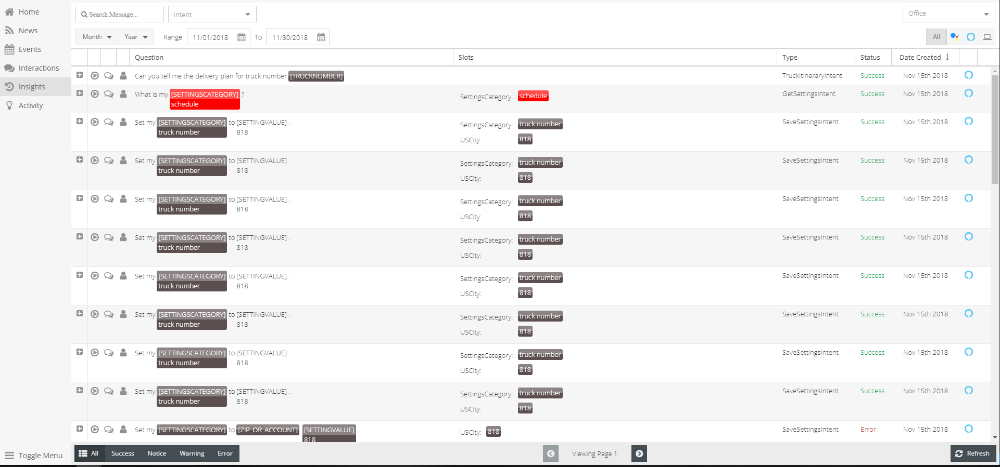

History¶
Questions asked by users are recorded. This page allows you to view recorded questions with additional analytical information. Questions are color coded by value, synonym, and statues. This section was created with the intent to help analyze skill use and target information being requested.
Features Within History¶
Filter Questions
- Inent type
- Select buttons on top left or use search bar
- By Date
- Select this month or last
- Select this year or last
- Or Select range of dates
- “+” button - expands view of each questions
- Will display hte response given
- Play button
- Allows you to sample the question aubidly